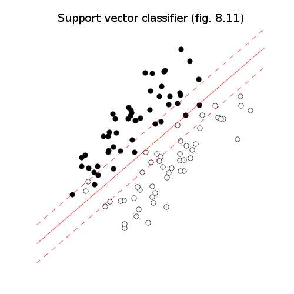
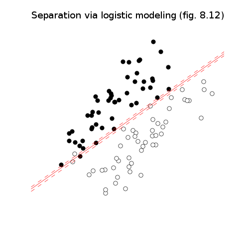
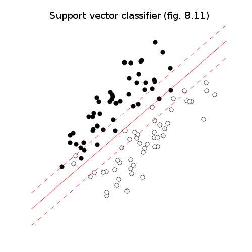
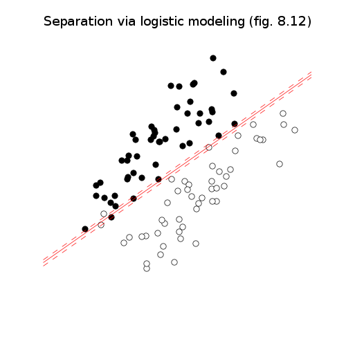

# Figures 8.10-12, page 426-429.
# Approximate linear discrimination.
import pickle
from cvxopt import solvers, matrix, spmatrix, spdiag, log, exp, div
from cvxopt.blas import dot
from cvxopt.modeling import variable, op
solvers.options['show_progress'] = False
try: import pylab
except ImportError: pylab_installed = False
else: pylab_installed = True
data = pickle.load(open("linsep.bin", 'rb'))
X, Y = data['X'], data['Y']
n, N, M = X.size[0], X.size[1], Y.size[1]
# Via linear programming.
#
# minimize sum(u) + sum(v)
# subject to a'*X - b >= 1 - u
# a'*Y - b <= -1 + v
# u >= 0, v >= 0
a, b = variable(2), variable()
u, v = variable(N), variable(M)
op( sum(u)+sum(v), [X.T*a-b >= 1-u, Y.T*a-b <= -1+v,
u>=0, v>=0] ).solve()
a = a.value
b = b.value
if pylab_installed:
pylab.figure(1, facecolor='w', figsize=(5,5))
pts = matrix([-10.0, 10.0], (2,1))
pylab.plot(X[0,:], X[1,:], 'ow', Y[0,:], Y[1,:], 'ok',
pts, (b - a[0]*pts)/a[1], '-r',
pts, (b+1.0 - a[0]*pts)/a[1], '--r',
pts, (b-1.0 - a[0]*pts)/a[1], '--r' )
pylab.title('Separation via linear programming (fig. 8.10)')
pylab.axis([-10, 10, -10, 10])
pylab.axis('off')
pylab.xticks([])
pylab.yticks([])
# Support vector classifier.
#
# minimize t + gamma*(1'*u + 1'*v)
# subject to a'*X - b >= 1 - u
# a'*Y - b <= -1 + v
# u >= 0, v >= 0
# [t*I a; a' t] >= 0
gamma = 0.1
nv = n + 2 + N + M # variables (a, b, t, u, v)
ni = 2 * (N + M)
c = matrix(0.0, (nv,1))
c[3], c[4:] = 1.0, gamma
IN = spmatrix(1.0, range(N), range(N))
IM = spmatrix(1.0, range(M), range(M))
Gl = matrix(0.0, (ni, nv))
hl = matrix(0.0, (ni, 1))
Gl[:N, :n] = -X.T
Gl[:N, n] = 1.0
Gl[:N, n+2:n+2+N] = -IN
hl[:N] = -1.0
Gl[N:N+M, :n] = Y.T
Gl[N:N+M, n] = -1.0
Gl[N:N+M, -M:] = -IM
hl[N:N+M] = -1.0
Gl[N+M:N+M+N, n+2:n+2+N] = -IN
Gl[N+M+N:, -M:] = -IM
Gs = [spmatrix(0.0, [], [], (9, nv))]
Gs[0][2,0] = -1.0
Gs[0][6,0] = -1.0
Gs[0][5,1] = -1.0
Gs[0][7,1] = -1.0
Gs[0][0,3] = -1.0
Gs[0][4,3] = -1.0
Gs[0][8,3] = -1.0
hs = [matrix(0.0, (3,3))]
sol = solvers.sdp(c, Gl, hl, Gs, hs)
a = sol['x'][:2]
b = sol['x'][2]
if pylab_installed:
pylab.figure(2, facecolor='w', figsize=(5,5))
pts = matrix([-10.0, 10.0], (2,1))
pylab.plot(X[0,:], X[1,:], 'ow', Y[0,:], Y[1,:], 'ok',
pts, (b - a[0]*pts)/a[1], '-r',
pts, (b+1.0 - a[0]*pts)/a[1], '--r',
pts, (b-1.0 - a[0]*pts)/a[1], '--r' )
pylab.title('Support vector classifier (fig. 8.11)')
pylab.axis([-10, 10, -10, 10])
pylab.xticks([])
pylab.yticks([])
pylab.axis('off')
# Via logistic modeling.
#
# minimize -sum(X'*a - b) + sum log (1 + exp([X';Y']*a - b))
A = matrix(0.0, (N+M,n+1))
A[:N,:n], A[N:,:n], A[:,n] = X.T, Y.T, -1.0
c = -(matrix(1.0, (1,N)) * A[:N,:]).T
# minimize c'*x + sum log (1 + exp(A*x))
def F(x=None, z=None):
if x is None: return 0, matrix(0.0, (n+1,1))
w = exp(A*x)
f = dot(c,x) + sum(log(1+w))
grad = c + A.T * div(w, 1+w)
if z is None: return matrix(f), grad.T
H = A.T * spdiag(div(w,(1+w)**2)) * A
return matrix(f), grad.T, z[0]*H
sol = solvers.cp(F)
a, b = sol['x'][:2], sol['x'][2]
if pylab_installed:
pylab.figure(3, facecolor='w', figsize=(5,5))
pts = matrix([-10.0, 10.0], (2,1))
pylab.plot(X[0,:], X[1,:], 'ow', Y[0,:], Y[1,:], 'ok',
pts, (b - a[0]*pts)/a[1], '-r',
pts, (b+1.0 - a[0]*pts)/a[1], '--r',
pts, (b-1.0 - a[0]*pts)/a[1], '--r' )
pylab.title('Separation via logistic modeling (fig. 8.12)')
pylab.axis([-10, 10, -10, 10])
pylab.xticks([])
pylab.yticks([])
pylab.axis('off')
pylab.show()
 


